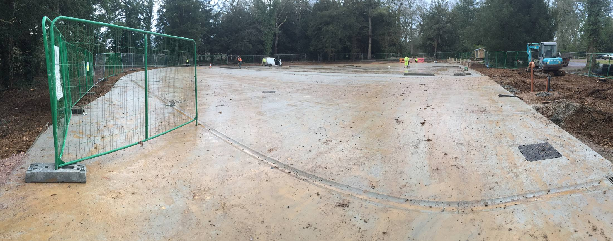
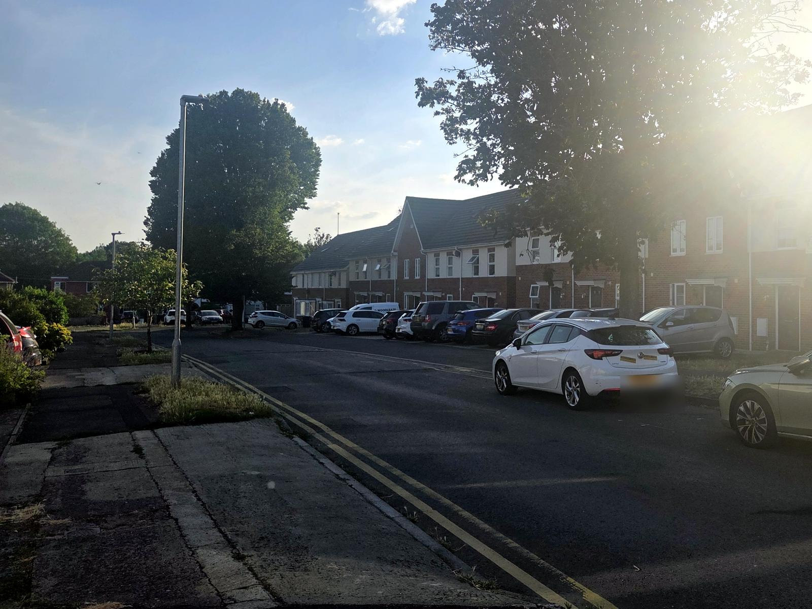
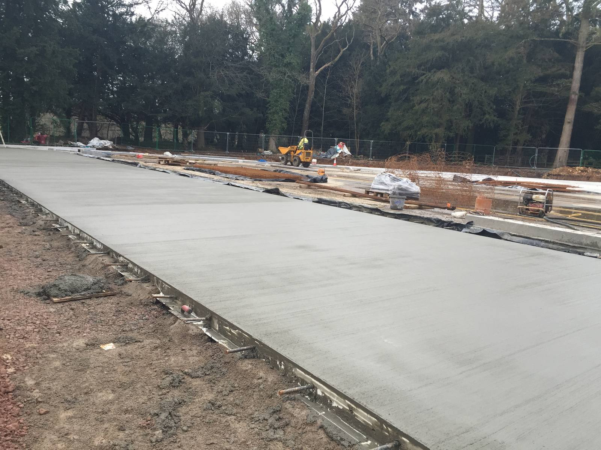
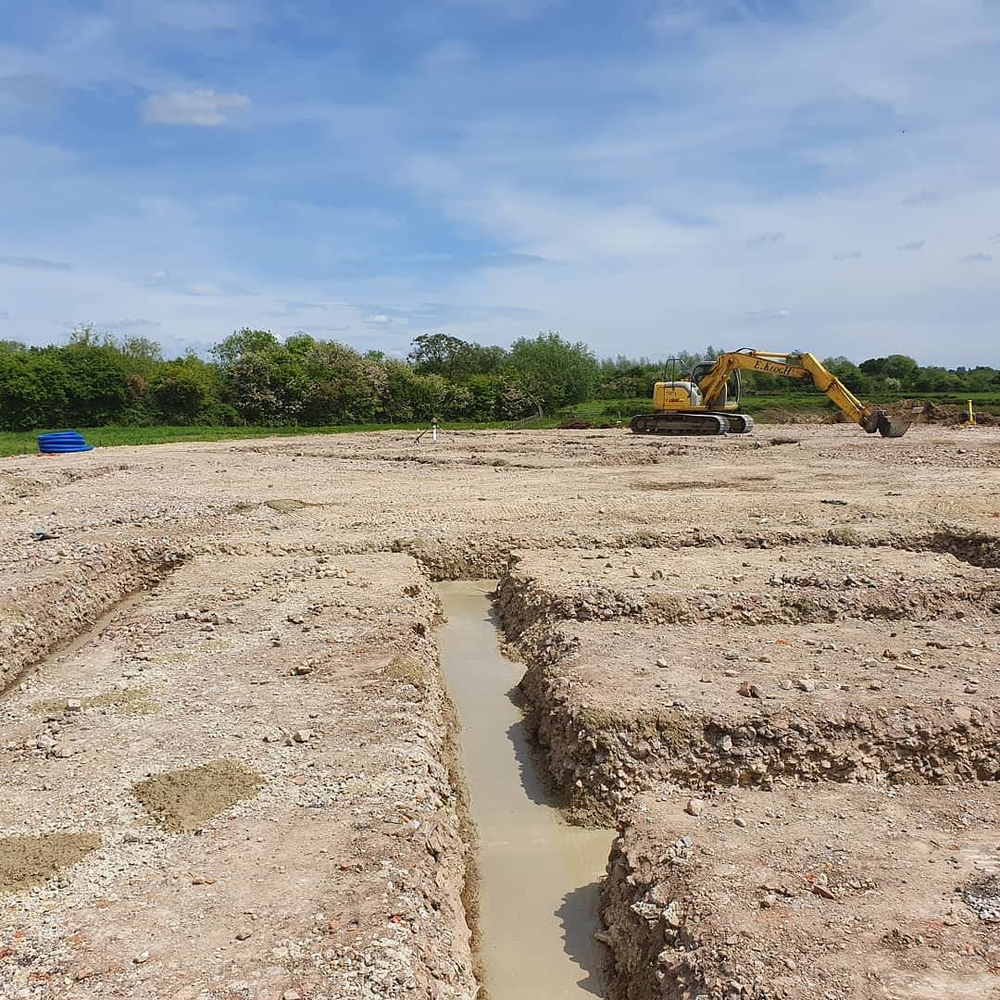
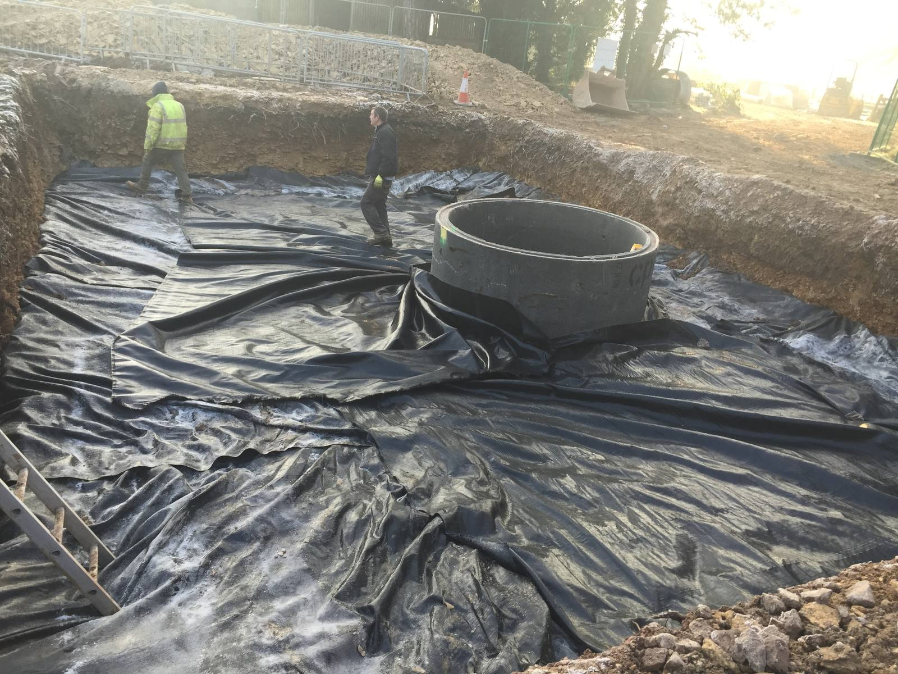
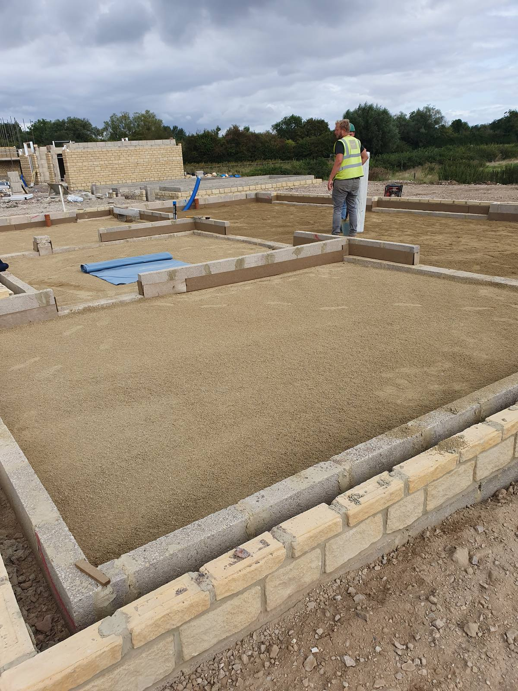
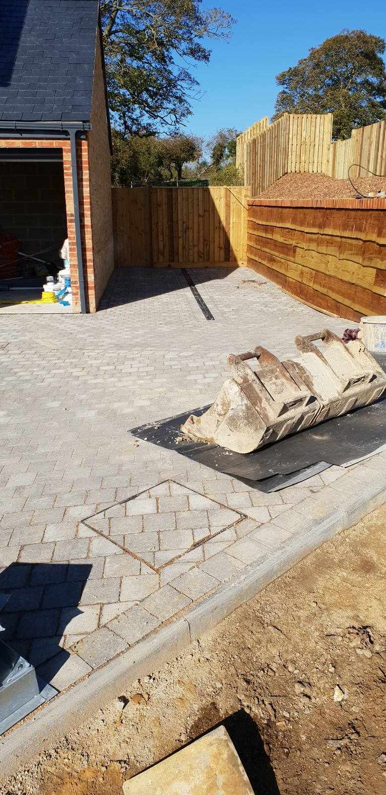

Developments
Built as principals. Judged as owners.
Since 1995 we've developed property of our own across Swindon and Wiltshire alongside our contracting work. What follows is the record — finished work, photographed as it stands.

Featured
Westonbirt Arboretum
Large reinforced concrete bays and a deep soakaway, set out, dug and poured within a working arboretum — a job where the setting demanded tidy plant movements and clean edges.

Residential development

Reinforced concrete bays

Foundations & substructures

Soakaway construction

Substructures & floor preparation

External works & completions
More project photography is being added as it is digitised. Details of specific schemes are available on request.
Want to see a scheme in person?
Most of our developments are a short drive from Swindon. Get in touch and we'll point you to the nearest.